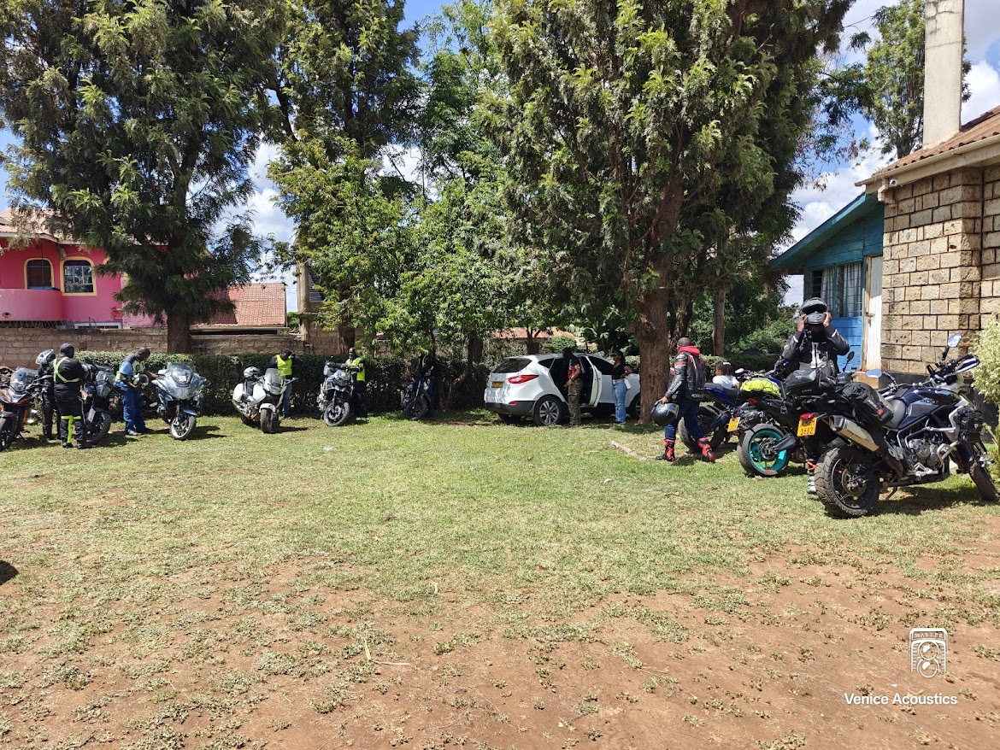
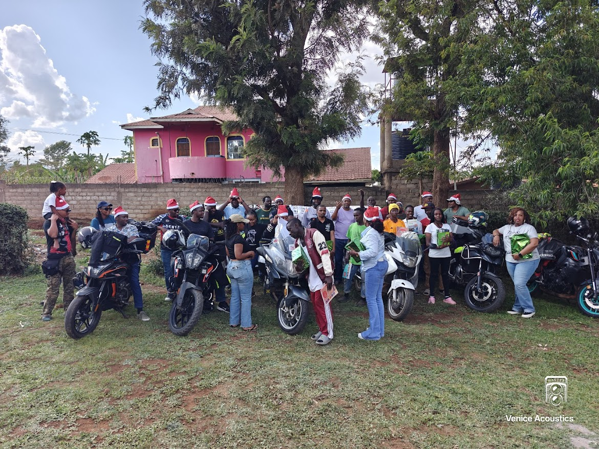
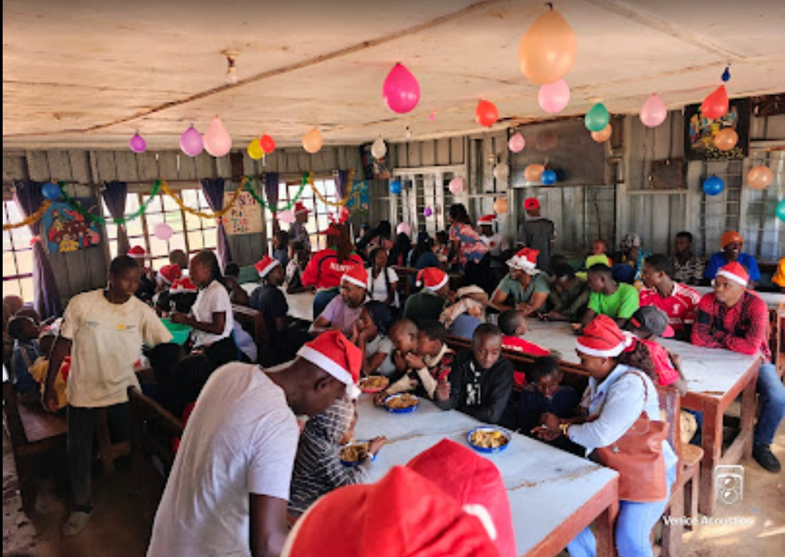

Teule Early Christmas Ride: When Bikes Bring Gifts
There are days when a 25km ride feels less like a journey and more like a promise. Our early Christmas stop at Teule Children's Home was one of those days.
Driving into Teule, the kids came out to meet us with the same excitement you see when a surprise arrives. Their smiles made the full boxes of uniforms and the stack of books feel like the smallest part of the story.

Riders arrive at Teule in time for the early holiday celebration.For the entire group, that school was more than a stop on the route. It was a reminder of why we ride together in the first place. The children were not spectators—they were the reason the helmets came off and the boxes came out.
Supply boxes, books, and school uniforms were piled into the hall. The crew moved quickly, unloading the support truck and carrying gifts inside. The scene felt less like charity and more like a team setting a table for friends.

Books and resources prepared for Teule's students as part of the holiday support.The route was straightforward—Lang'ata Road to Kiserian, then a short turn into the estate. The true complexity was in the quiet way everyone showed up: one rider with uniforms, another with activity books, others with warm jackets and food for the after-school table.
At the school, the riders stacked the cartons and lined up the uniforms. The children waited in a neat line, each one watching as the gifts were opened and the care packages were handed over.

Riders and students share stories and a meal after the gift delivery.For the club, the real surprise came later when the kids asked if they could learn how to ride safely too. That question turned the ride into a promise to return—not only with donations, but with a shared commitment to better roads and safer sidewalks.
The post-ride reflections were quiet. Not because the ride lacked excitement, but because everyone felt the weight of a bigger responsibility. We started the day as a group of bikers and ended it as a group with a purpose that extended beyond the road.